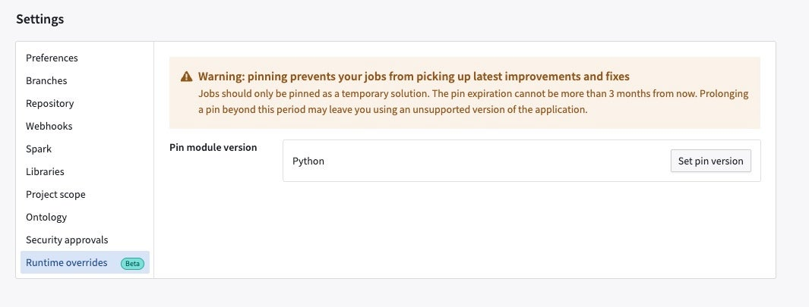
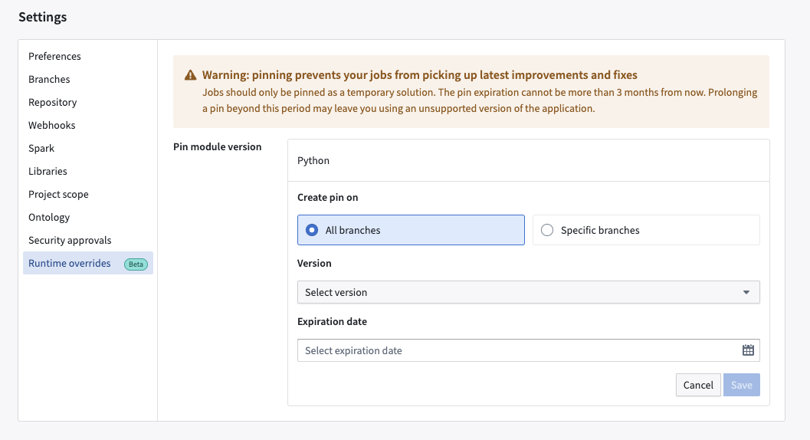
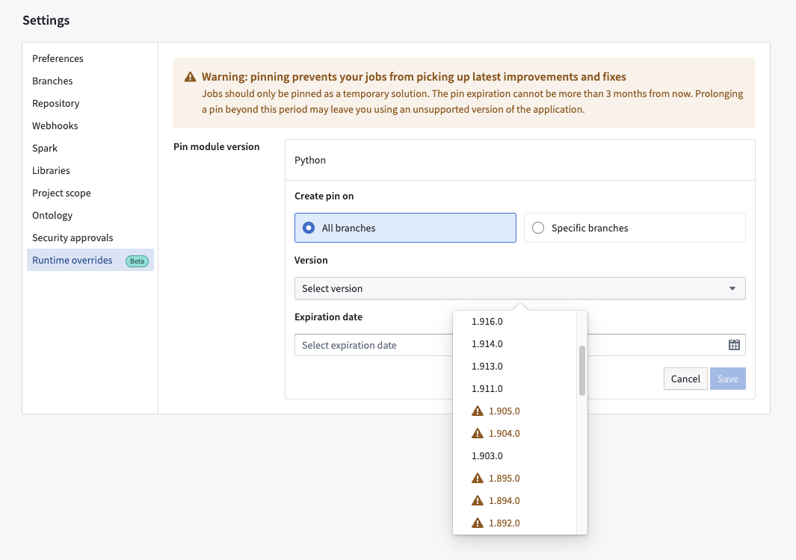
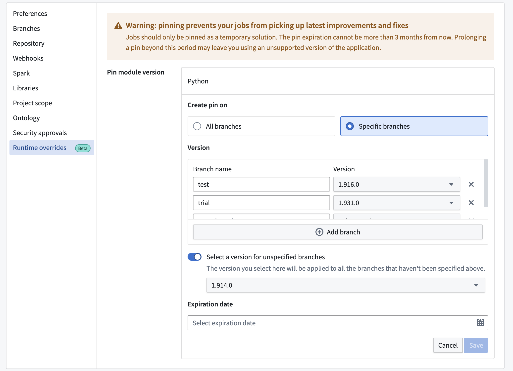
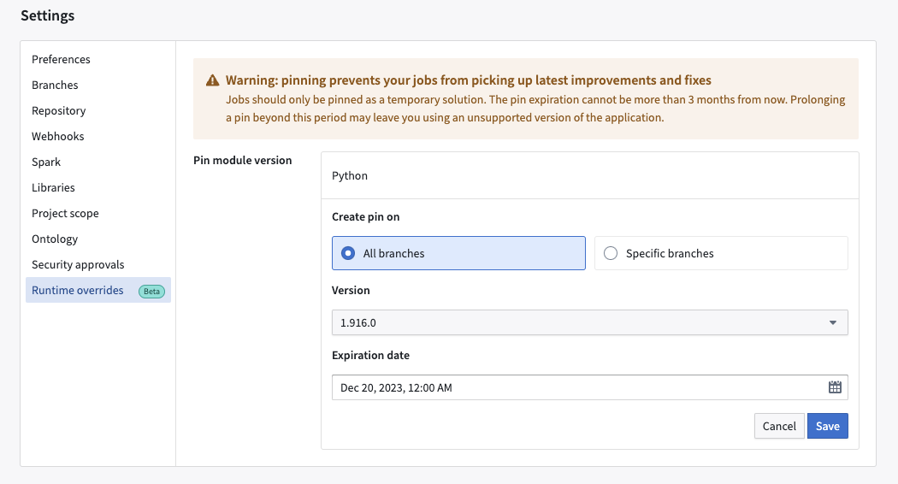
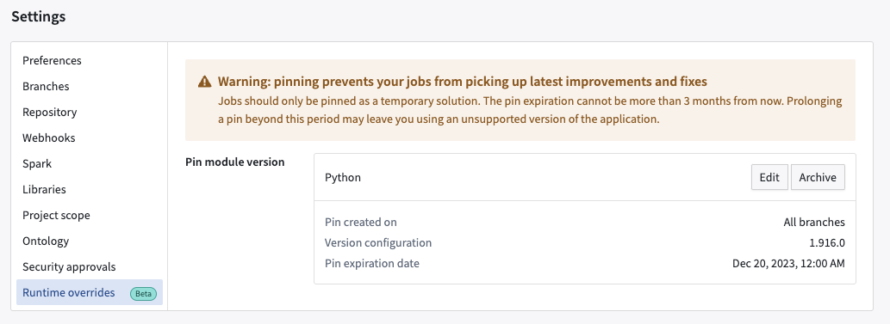
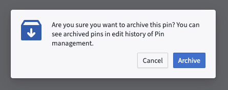
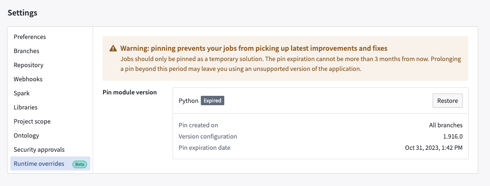
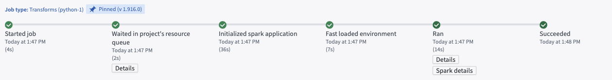

Code Repositories allows you to pin a Spark module for a repository. This enforces the usage of a specific version of Spark. You can pin a Spark module for both new and existing builds.
:::Callout{theme="neutral"} We recommend that you always use the newest version of Spark for the most up-to-date performance and security features. Pinning a Spark module should be a temporary measure. :::
Navigate to the Settings tab in Code Repositories, then select Runtime overrides.

From the Runtime overrides tab, select Set pin.

You can create pins on all branches or on specific branches. You can select a Spark module version (for each module type available in the given repository) you want to pin and also specify an expiration date. The expiration date cannot be more than 90 days beyond the current date. The pin expires at the end of the 90-day period or the expiration date you specify, whichever is earlier. After the expiration date, your builds may fail.
First specify the Spark version you want to pin and the expiration date.

:::callout{theme="neutral"} Unstable and non-recommended versions have a warning sign prefixed as we do not recommend using them unless absolutely necessary. :::
When you are finished, select Save to set the pin.
You can pin versions for each branch. You can also select versions for unspecified branches.

When you are finished, select Save to set the pin. In the below sample screenshot, we create a pin on all branches for version 1.916.0, which is set to expire on December 20, 2023 at 12:00 AM.

After setting the pin, you can view a confirmation that the pin was created.

Selecting Edit lets you modify a pin. You can change the branch, version, and expiration date using the same workflow for creating a pin. Selecting Archive will remove the pin and add the Expired label to the pins you previously set.

You can select Restore to re-create the pins you archived.

On the Build Preview > view details page, you can view the version you pinned for the repository.

When running continuous integration (CI) for a build in Code Repositories, a version of the transforms library is chosen based on the current version of the repository template. If a pin is applied, CI will instead use the pin's version of the library if it is higher than the minimum version declared by the template. Users can leverage pins for faster access to new versions of the API and new features for code assist and local development.
We recommend that you always use the newest version of Spark. Not doing so means that you may be missing out on performance and security fixes and improvements which may have adverse impact on your builds.
That said, we understand that there may be specific use-cases that make pinning necessary and therefore offering this functionality with the caveat that it should be used on a temporary basis. Prior to the expiration date, we recommend that you make changes required on your end to be compatible with the newest version of Spark.
This feature is in development.
This feature is in development.
No upgrades or actions are needed from your side.
You can use this feature for both new and existing builds.
The in-platform pin will always take precedence.